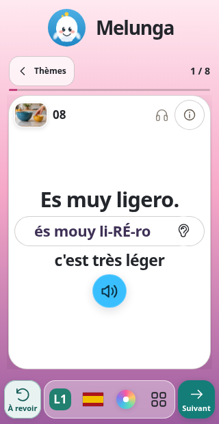
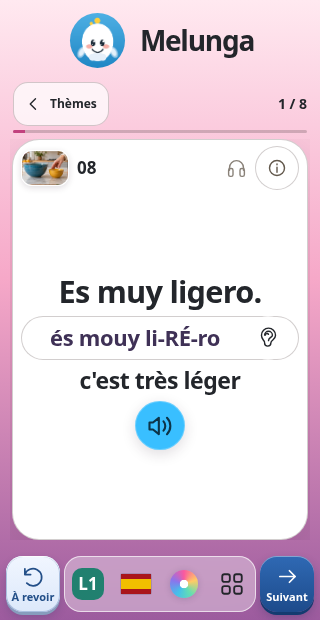
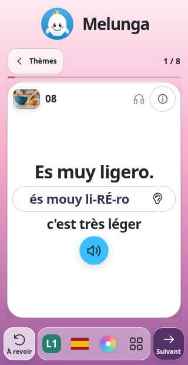
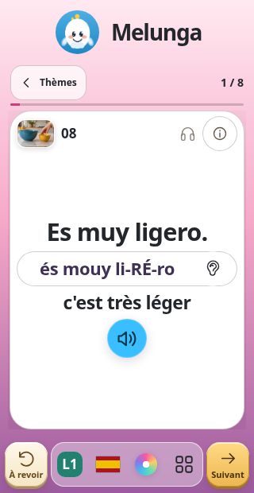

Melunga · maquettes mobiles
Quatre finitions pour vos deux boutons
La présentation 3 est conservée : À revoir à gauche, les quatre icônes au centre et Suivant à droite. Les couleurs et le relief des deux boutons changent.
1 · Turquoise doux
Conseillée
Du turquoise doux, avec un bouton Suivant plus soutenu et un léger relief.

2 · Bleu en relief

Des touches bleues au relief plus marqué, pour bien distinguer les deux actions.

3 · Verre et prune

Du verre clair et du prune pour laisser apparaître les couleurs de l’ambiance.

4 · Ivoire et ambre

Des teintes ivoire et ambre, avec un relief de touches légèrement biseautées.